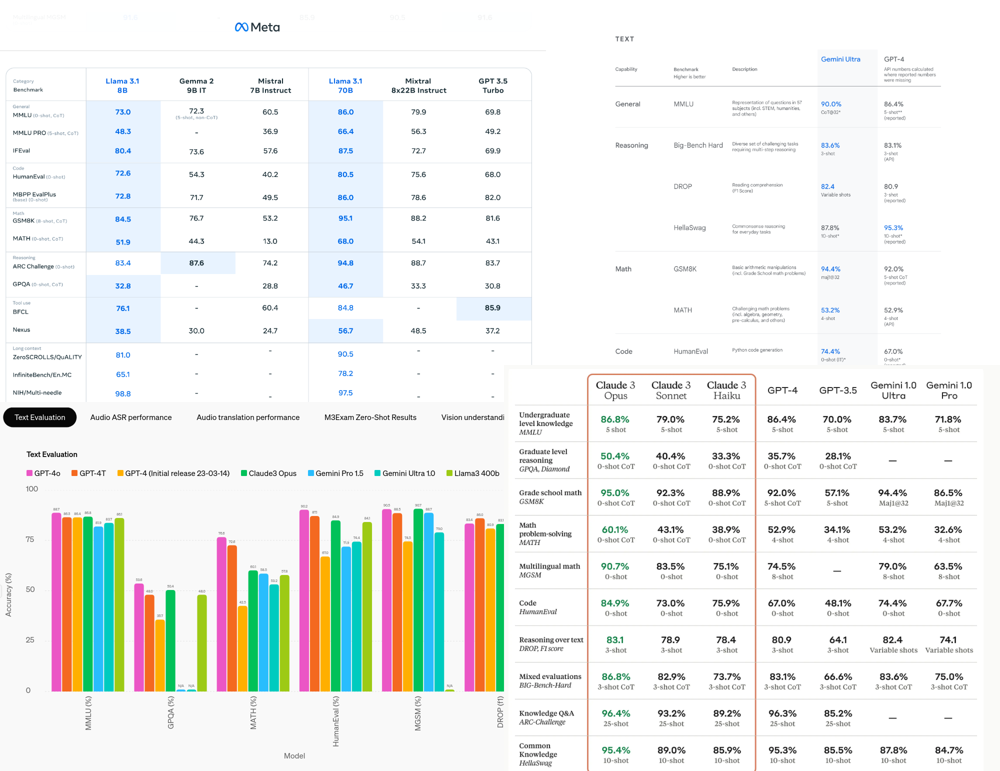
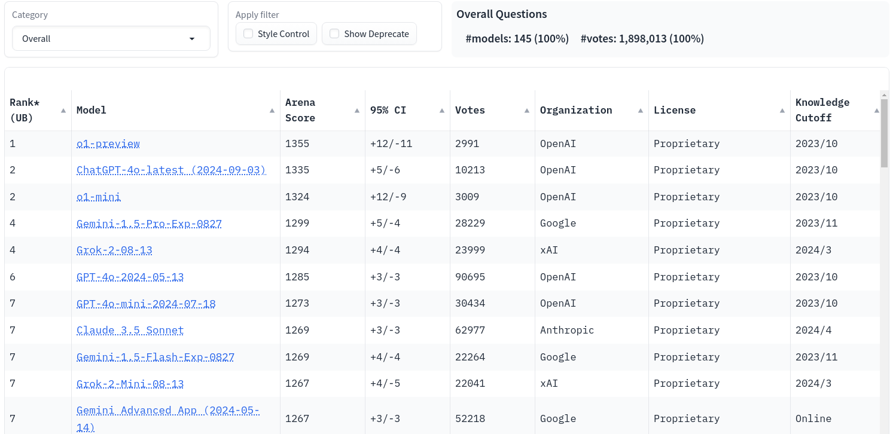

~14k questions (test split)Which one of these organs has the lowest energy expenditure per unit of body mass (kg)?
A. Brain
B. Kidney
C. Liver
D. Skelatal Muscle
Which one of these organs has the lowest energy expenditure per unit of body mass (kg)?
A. Brain
B. Kidney
C. Liver
D. *** Skelatal Muscle ***
| MMLU | Meta-Llama-3.1-8B-Instruct |
|---|---|
| Advertised (Meta) | 73.0% |
| Original choices (Me) | 75.4% |
| Shuffled choices (Me) | 68.9% |
similar results: https://arxiv.org/pdf/2402.01781
~400 multiple choice questionshttps://arxiv.org/pdf/2108.07732 https://arxiv.org/abs/2107.03374
https://lmarena.ai/, a “vibes” based benchmark

🐙 Github: @cmrfrd
🐦 Twitter: @thecmrfrd
📬 Email: alex@taoa.io
📑 Blog: taoa.io
taoa.io/static/slides/llm_benchmarking